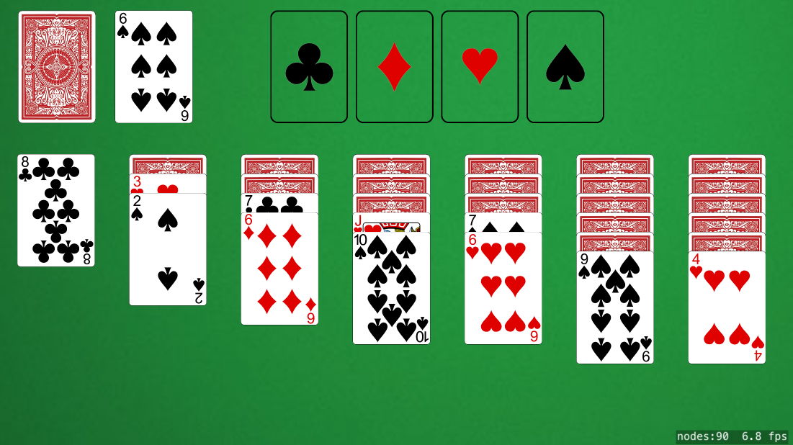

SOLiTAIRE
SOLiTAIRE was a project to utilize the skills I had learned during the development of Tetrosity in making a game from scratch instead of following a tutorial. I decided that Klondike Solitaire was a simple enough game to develop in my time period while being challenging enough to test my skills. Overall, I'm happy with the direction the project is moving in, but I wish I had been able to accomplish more before my deadline arrived.
Post Mortem - Overview
This project had a 5 week development time, which at the start of the project seemed like plenty to achieve what I was planning. I simply wanted to create from the ground up a game of Solitaire using touch input, simple graphics, and a smooth interface. Early progress went very well, establishing classes for decks, reserves, and tableaus and having the program deal out a traditional game of Klondike. I started having problems during about the third week, as my responsibilities for my senior production team escalated. The game was approaching its final deliverable goal and needed my full attention for just about the remaining two weeks of my time. This meant that I was unable to finish all of the features in time.
On the bright side, the features that did make it into the build came out very nice, and playing with them feels very responsive and professional in my eyes. This included the cards being dealt into a standard Klondike layout, being able to deal out three cards at a time from the deck and shuffle them once they are all dealt, placing cards onto a tableau with correct suit and value checks, and building the victory reserves ace and up. I also included a system to load the correct art for each card and simulate "flipping" cards by switching their sprite. There were only a few missing features, but they were ultimately important for the playability of the game. These included moving a stack of cards together from their top card (which is crucical to gameplay) as well as checking for victory or loss conditions. As I was working during my last day of development, I tried to implement movement of card stacks, and found that I had planned poorly for this feature. My tableaus functioned by holding a list of cards that were on them, but the more effective way to facilitate this would have been to parent each card to the card above, which would allow for easy movement of multiple cards. Win condition would have been fairly simple, as it just requires checking each victory zone's current value and making sure that each is equal to King (which is represented as 13).
Post Mortem - What Next?
As I am graduating soon, I will be moving on to start my career in software development. This does not, however mean that I am going to be forsaking my skills as a game developer. I fully intend to work on games on the side and keep my skills sharp. Part of this practice will be to continue working on this project. I would love to be able to finish implementing the missing features as well as add in a system for UI, sound effects, and other polished features. I regret not having enough time in the semester to finish this project in time, but I found that I enjoy iOS development deeply, and look forward to working with it in the future.